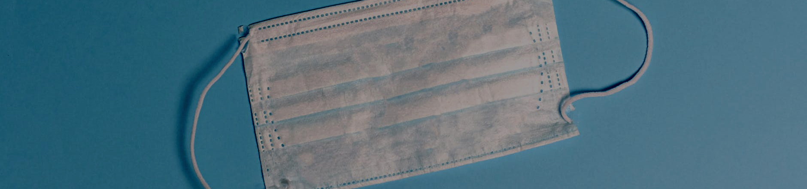

کمک پزشکی
سرماخوردگی
علت
علائم
پیشگیری
درمان
- ویروس ها مهمترین عامل سرماخوردگی هستند.
- ویروس سرماخوردگی از طریق دهان، چشم یا بینی وارد بدن شما می شود، معمولاً زمانی که فردی که بیمار است سرفه، عطسه یا صحبت می کند.
- همچنین با دست زدن به اشیا و سطوح آلوده و سپس دست زدن به چشم ها، بینی یا دهان خود دچار سرماخوردگی می شوید.
- عطسه کردن
- گلو درد
- سردرد
- گرفتگی بینی
- تب
- آبریزش بینی
- شستن دستها: دست های خود را به طور کامل و با آب و صابون به مدت حداقل 20 ثانیه بشویید. از لمس چشم ها، بینی یا دهان خود با دست های شسته نشده خودداری کنید.
- ضد عفونی کردن وسایل: سطوح با لمس بالا مانند دستگیره درها، کلیدهای روشنایی، لوازم الکترونیکی و میزهای آشپزخانه و حمام را روزانه تمیز و ضدعفونی کنید.
- سرفه خود را بپوشانید: عطسه و سرفه در دستمال کاغذی. دستمال های استفاده شده را فورا دور بیندازید، سپس دست های خود را کاملا بشویید. اگر دستمال ندارید، عطسه یا سرفه کنید تا آرنج خود را خم کنید و سپس دستان خود را بشویید.
- دوری کردن از افراد مبتلا به سرماخوردگی:از تماس نزدیک با کسی که سرما خورده است خودداری کنید. در صورت امکان از جمعیت دوری کنید.
- دی کویل و نای کویل
- زایلومتازولین
- بنادریل
- ستیریزین
- بخار اب
- ویکس

Covid
علت
علائم
پیشگیری
درمان
- عفونت با سندرم حاد تنفسی شدید کروناویروس باعث ایجاد کرونا می شود. بیماری 2019 (COVID-19).
- ویروس COVID-19 عمدتاً از فردی به فرد دیگر در بین افرادی که در تماس نزدیک هستند (در حدود 6 فوت یا 2 متر) پخش می شود.
- ویروس از طریق قطرات تنفسی منتشر می شود که فرد مبتلا به ویروس سرفه، عطسه، نفس کشیدن، آواز خواندن یا صحبت کردن منتشر می شود. این قطرات را می توان استنشاق کرد یا در دهان، بینی یا چشمان یک فرد نزدیک فرود آمد.
- تب یا لرز
- خستگی
- دردهای عضلانی یا بدن درد
- سرفه
- از دست دادن حس چشایی یا بویایی
- اسهال
- آبریزش بینی
- گلو درد
- واکسن زدن. واکسنهای COVID-19 خطر ابتلا و انتشار COVID-19 را کاهش میدهند.
- از تماس نزدیک (در حدود 6 فوت یا 2 متر) با هر کسی که بیمار است یا علائم دارد خودداری کنید.
- هنگام عطسه یا سرفه دهان وبینی خود را با دستمال کاغد با ارنج بپوشانید.دستمال استفاده شده را دور بیندازید. بلافاصله دست های خود را بشویید.
- از محل کار، مدرسه و مناطق عمومی دوری کنید و در خانه بمانید ، مگر اینکه قرار باشد مراقبت های پزشکی دریافت کنید. اگر مریض هستید از حمل و نقل عمومی، تاکسی و خدمات سواری خودداری کنید.
- پاراستامول
- رمدسیویر
- دگزامتازون
- مولتی ویتامین
- انوکساپارین